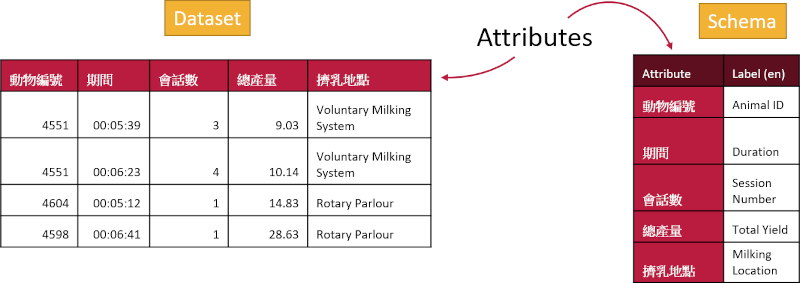

The structure of OCA allows for internationalization, where multiple languages can be represented in a single schema without disturbing the underlying structure of the data. This helps with data interoperability and international usability.
It is most likely that your Label will be the same as your Attribute Name (if they are the same language). If your Attribute Name is really cryptic (e.g. ‘sC’) you can give this a better (brief) label like “Substrate Concentration”. This is also your opportunity to give language specific labels to attribute names (such as ‘Name’ in English or ‘Nom’ in French).
Description is where you can describe (in the specific language) your attribute in more detail which will be very helpful for other users. Is this attribute measured in a specific way? Do you have a specific way it was sampled? Does this attribute represent the name of the sample on the tube in your sample library? Can you give details about the units so there is no ambiguity?
Below is an example of how labels work and how they can be most helpful when a schema is described in multiple languages.
